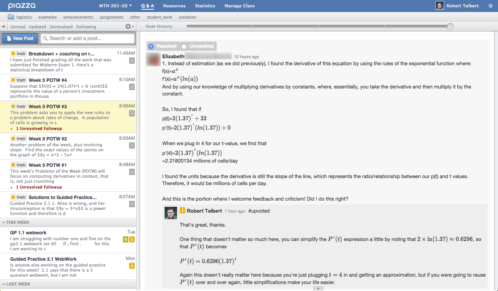
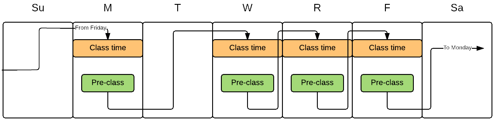
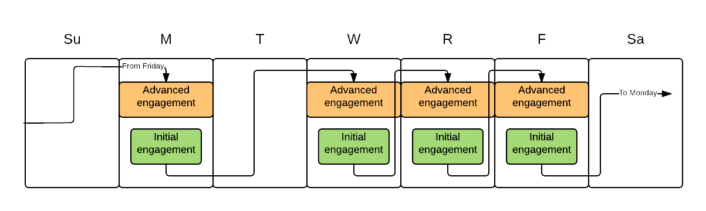
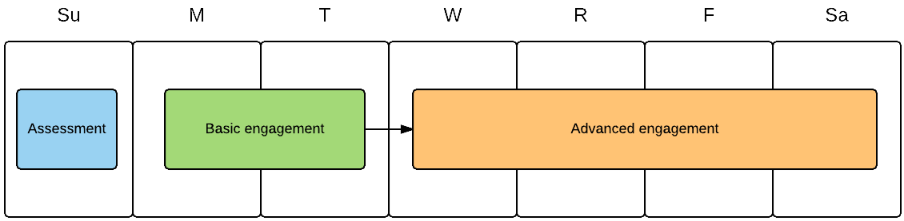
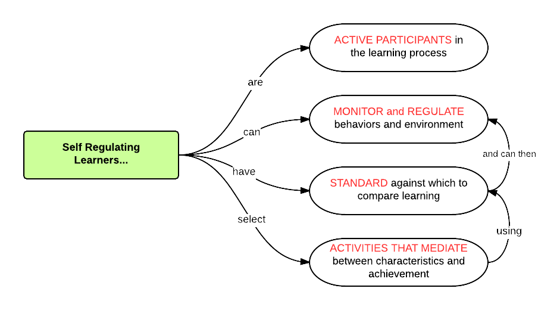
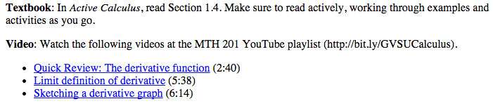
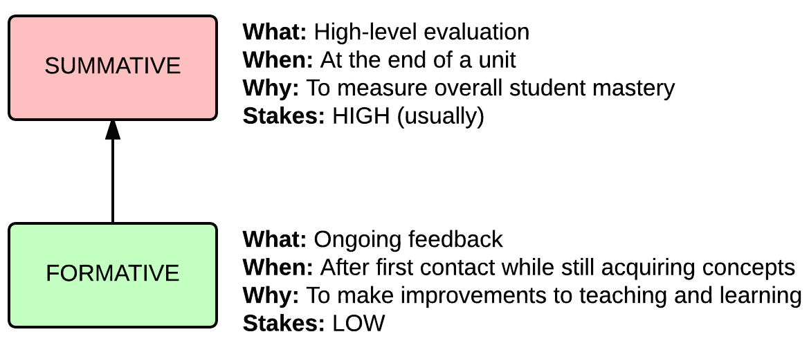
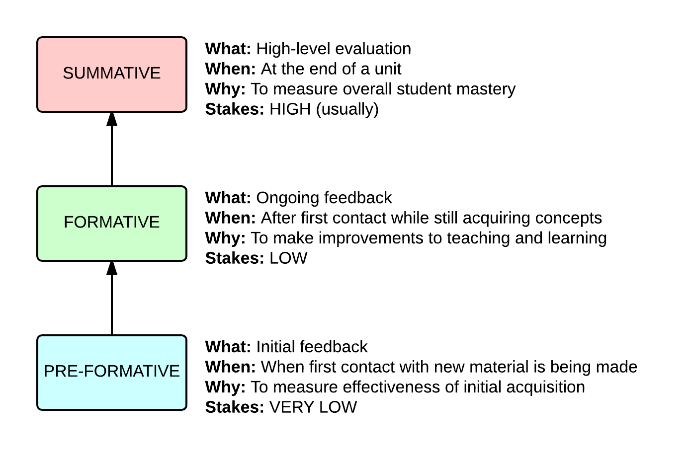

Implementing and assessing flipped learning in face-to-face and online contexts
Hybrid Learning Workshop, Hope College, 8 June 2015
Robert Talbert, Grand Valley State University
This talk can be accessed online at:
http://rtalbert.org/hlwhopeMy first flipped experience
Initial contact with new material before class
Deeper contact based on initial fluency during class
Continued explorations after class
What I hoped for

How it went

What was missing?
A definition
Flipped learning is a pedagogical approach in which direct instruction moves from the group learning space to the individual learning space, and the resulting group space is transformed into a dynamic, interactive learning environment where the educator guides students as they apply concepts and engage creatively in the subject matter.
Fastforward to now
The main questions:
What works?
What are the key elements for making flipped learning effective for learners?
What works online?
Can those elements be decoupled from the assumptions of face-to-face classes, and if so, how?
Digression:
Translating flipped learning language from F2F-centric to online/hybrid friendly
Flipped learning is a pedagogical approach in which direct instruction moves from the group learning space to the individual learning space, and the resulting group space is transformed into a dynamic, interactive learning environment where the educator guides students as they apply concepts and engage creatively in the subject matter.
Can we decouple flipped learning from time/space coordinates?
A time/space-agnostic nomenclature for flipped learning
| Context | F2F language | Agnostic language |
|---|---|---|
| Individual space | "Pre-class" | Basic engagement |
| Group space | "In-class" | Advanced engagement |
| Individual space | "Post-class" | Extended engagement |
Weekly workflow for F2F flipped class
Updated workflow for F2F flipped class
Weekly workflow for online flipped class
 Or segment into smaller/more numerous linked blocks.Structure
Cognitive structure
Paul Pintrich, “A Conceptual Framework for Assessing Motivation and Self-Regulated Learning in College Students”, Ed. Psych. Review 16(4):385--407 (2004)
Structure during pre-class/initial engagement activity
Learners need cognitive structure at all points in a flipped learning environment to give intentional focus to intellectual development, not just content.
What changes about cognitive structure from F2F flipped to online flipped?
Not a lot.
Absence of regular class meetings → increased importance of feedback
Lack of rigid meeting schedule → stronger emphasis on self-management
Infrastructure
Biggest issue with flipped learning: Time and task management.
Infrastructure needs:
Predictable schedule
Transparent expectations and grading practices
Airtight course management
Multiple channels for help
Regular communication
Intentional instruction on time/task/project management
What changes about course infrastructure from F2F flipped to online flipped?
Not a lot.
Extremely careful build process with CMS
Use of online channels for help
Careful avoidance of tech overload
Documentation, documentation, documentation
What doesn't change: Regular communication
Assessment
Kinds of assessment
Assessments for flipped classes:
What pre-formative assessment needs to do:
Present connections and learning objectives
Deliver students to content, not content to students
Give opportunities to test knowledge, self-check results, make choices about what's next
Convert learners from risk-aversion in learning
F2F flipped class
Online flipped class
What changes from F2F to online flipped assessment:
Pre-formative: Not much
Formative: No longer "in class" (e.g. clickers); focus on meaningful feedback, low stakes, quick turnaround
Summative: Actually kind of a lot.

Because of asynchronicity:
Rote/basic problems → Formative assessment
Summative assessment → Mastery via authentic, personalized work
Move toward iterative, feedback based approaches like specifications grading
Communication
In any flipped learning environment, communication must be:
Positive and honest
Regular but not constant
Multi-channel but not overwhelming
Supportive of structure and assessment
What changes from F2F to online flipped communication:
Communication necessary condition for existence
Use of personal touch very important
Meta-communication often needed
The client-consultant model
Thank you
Robert Talbert, Associate Professor of Mathematics
Grand Valley State University, Allendale, Michigan USA
Presentation: rtalbert.org/hlwhope
Images:
- Puzzle: https://www.flickr.com/photos/wilhei/
- Structure: https://www.flickr.com/photos/127437870@N08/
- Assessment: https://www.flickr.com/photos/ktylerconk/
- Communication: https://www.flickr.com/photos/wiertz/
- Success/failure: https://www.flickr.com/photos/86530412@N02/
- Client-consultant: https://www.flickr.com/photos/audiolucistore/